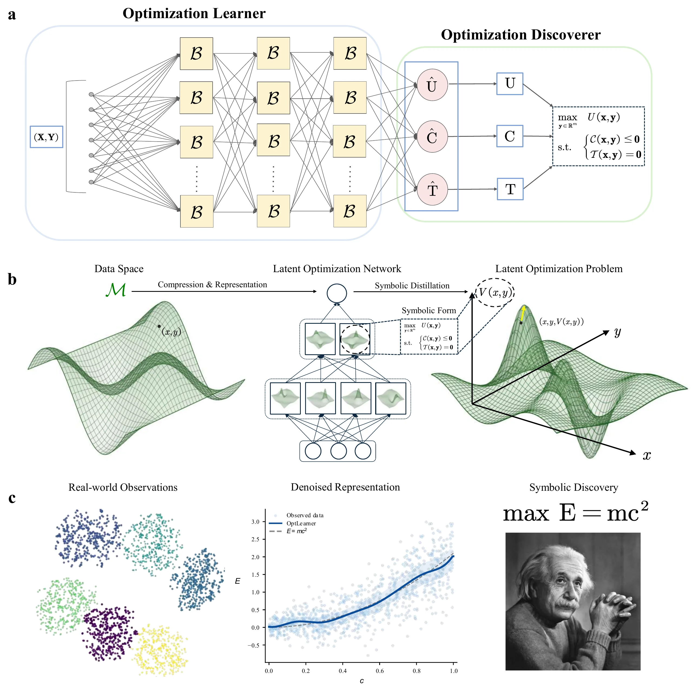
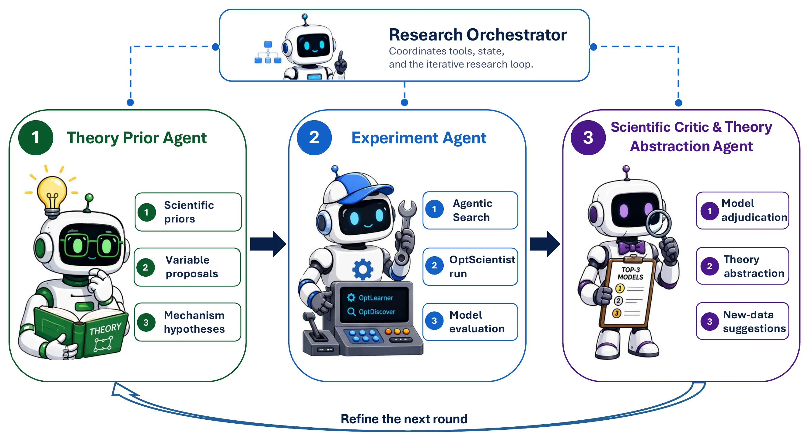
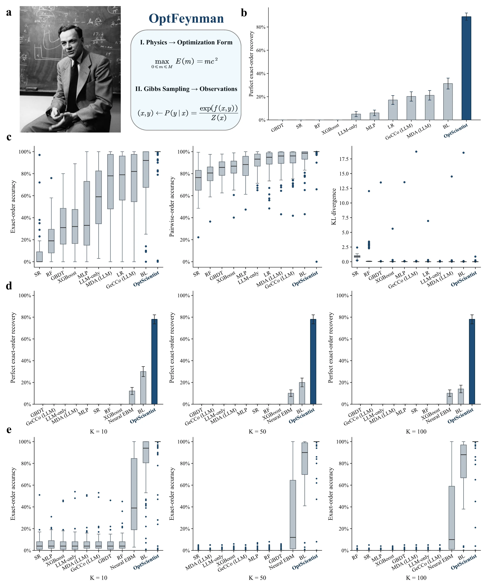
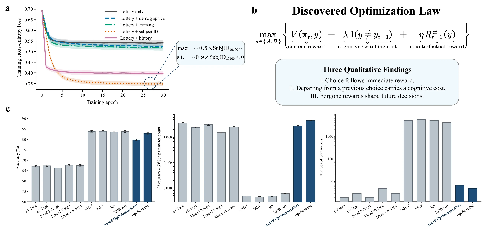
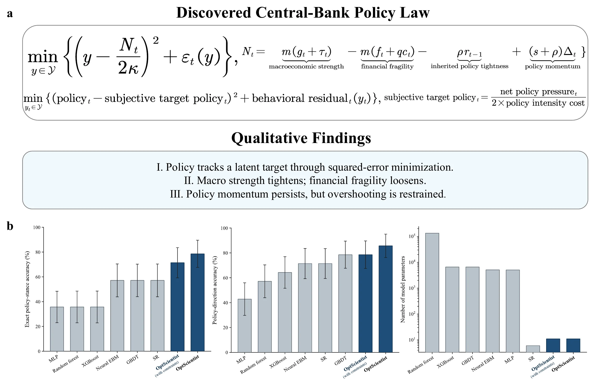
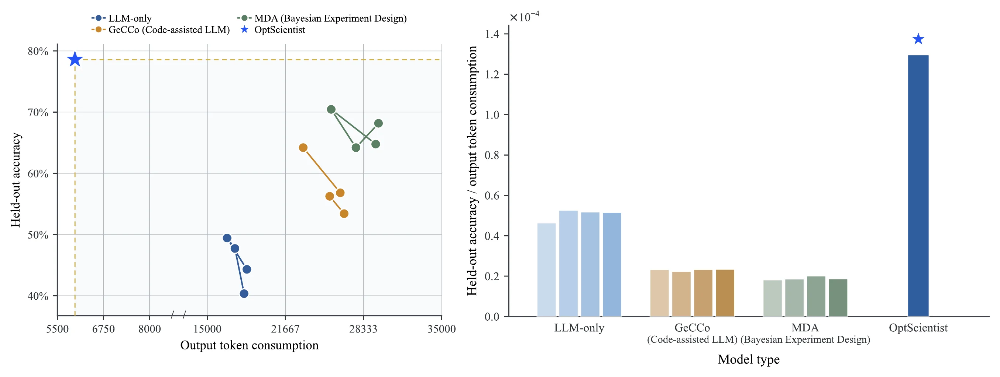

OptLearner
Optimization Learner
A Behavior Learning (BL) backbone learns a latent optimization landscape. A final single-block optimization representation bottleneck organizes the learned objective and optional constraints.
Scientific discovery should uncover more than the equations describing observations. It should help reveal the optimization principles that generate them.
1 Plokerm AI Lab2 Xiamen University3 University of Tübingen4 The University of Hong Kong
* Corresponding author
Illustrative concept · not a plot of experimental results
Across physics, biology, cognition, and economics, some of the most influential scientific theories explain observed phenomena as the solutions to underlying optimization problems.
Energy minimization, evolutionary optimality, rational choice, and intertemporal economic decisions may differ in subject, yet all can be expressed through objectives and constraints. Traditionally, scientists propose those structures first and then test them against data. That dependence on expert formulation is a bottleneck for scientific discovery.
Recover compact expressions that describe relationships between observed inputs and outputs.
Recover symbolic objectives and constraints that define the optimization problem generating observed outcomes.
An optimization representation is a scientific model, not automatic proof of a unique causal or psychological mechanism. The work aims to recover compact laws reproducing observable implications under the stated model assumptions.
OptScientist searches for the objective and constraint structure that makes an observed outcome optimal—or likely under a noisy optimization landscape.
For stochastic observations, the same learned scalar optimization landscape defines a Gibbs distribution over candidate outcomes.
OptScientist separates learning an optimization representation from discovering its symbolic form. This makes it possible to learn from noisy, high-dimensional data without sacrificing the goal of an interpretable law.
Optimization Learner
A Behavior Learning (BL) backbone learns a latent optimization landscape. A final single-block optimization representation bottleneck organizes the learned objective and optional constraints.
Optimization Discoverer
With OptLearner frozen, symbolic regression distills the active objective and constraint components into compact symbolic expressions, assembled into a discovered optimization law.

Why a bottleneck? Instead of distilling an unconstrained black-box mapping, OptDiscover operates on the learned components of a single optimization problem. Multiple branches of objective or constraint terms can be active within this representation.
Scientific discovery extends beyond fitting a formula. OptScientist embeds its discovery model in a research loop that integrates prior scientific knowledge, empirical evidence, theoretical abstraction, and questions for the next round.
Maintains the shared research state across rounds.
Extracts literature-informed priors, hypotheses, and candidate variables.
Runs the OptScientist Model to discover laws and collect evidence.
Evaluates laws, interprets mechanisms, and suggests what to study next.

The paper evaluates ground-truth recovery in physics-derived problems and explores discoveries in two real-world domains where the generating law is unknown: human choice and central-bank monetary policy.
OptFeynman contains 99 physics-derived optimization problems. Observations are sampled from their optimization landscapes, so discovered laws can be evaluated against the known generating objectives on unseen contexts.
The model achieves perfect exact-order recovery on 88/99 discrete problems and 78/99 continuous problems, outperforming the evaluated machine-learning, symbolic, and LLM-based baselines. The manuscript additionally examines robustness to noisy context variables.
* Perfect exact-order recovery on held-out contexts, using the paper’s metric; for continuous tasks, reported at K = 10, 50, and 100 sampled candidates. This is not a claim of unique causal identification.

On the CPC18 repeated-choice dataset, OptScientist discovers a sequential law in which decisions trade off immediate reward, cognitive switching cost, and counterfactual reward from the previous round.
Competitive held-out performance with a compact direct symbolic law; the study also examines an automatic-feature variant.

For quarterly central-bank decisions, OptScientist recovers a compact optimization law that describes monetary policy as tracking a latent subjective target through squared-error minimization.
The abstracted policy pressure combines macroeconomic strength, financial fragility, inherited policy tightness, and policy momentum.
The single-objective law uses 11 numerical parameters; both metrics are point estimates on the paper’s future-period test set.

Compared with three LLM-based automated model-discovery baselines, OptScientist uses substantially fewer output tokens on both real-world tasks while achieving competitive or stronger held-out predictive performance.
This comparison illustrates the paper’s strategy: let a specialized optimization-discovery model do the symbolic search, while using LLM agents to connect the search with scientific reasoning.
Comparisons use the same task descriptions, training data, and variable information; see the manuscript for the exact evaluation protocol and token counts.

Optimization is more than a computational technique. Objectives and constraints often form the language in which scientists state their theories. OptScientist asks whether that language can be discovered from observations, rather than only supplied in advance by experts.
The following connections develop the perspective of the paper’s Introduction. They distinguish demonstrated results from opportunities that remain open.
Many physical models characterize states through energy or free-energy minimization. OptFeynman provides a controlled test of recovering such optimization structure from synthetic observations. Extension to wider physical systems remains a research question.
EVIDENCE: OPTFEYNMAN BENCHMARKThe risky-choice experiment discovers a compact objective combining reward, switching cost, and forgone payoffs. It offers a resource-rational interpretation of behavior, which should be evaluated as a scientific hypothesis rather than a directly observed mental process.
EVIDENCE: HUMAN RISKY CHOICEEconomic theories often begin with utility, targets, or constraints chosen by modelers. The central-bank study illustrates the discovery of a compact target-tracking optimization law from macro-financial and policy observations.
EVIDENCE: MONETARY POLICYOptimality models have long informed evolutionary and biological explanations. OptScientist suggests a possible method for learning candidate objectives where an optimization description is appropriate; the manuscript does not report biological validation.
FUTURE RESEARCH DIRECTIONTo recover a compact symbolic objective and constraint structure whose optimal or stochastic outcomes reproduce observed patterns. Distinct representations may be observationally equivalent, so recovery is evaluated under task-specific assumptions and metrics.
Instead of only mapping inputs directly to outputs, the discovered expression defines an optimization landscape over possible outcomes. The solution of the optimization problem then provides the observable prediction.
The Theory Prior Agent proposes literature-based variables and search priors; the Experiment Agent tests candidate laws against data; the Critic and Theory Abstraction Agent interprets evidence and proposes refinements. Data alone do not automatically settle scientific interpretation.
No such claim is needed. An optimization account may be unsuitable, non-unique, or computationally infeasible to discover. The manuscript explicitly identifies the limits of the optimization assumption as future research.
From observations to optimization representations, from symbolic laws to testable theories—and back to new observations.
DISCOVER · EVALUATE · ABSTRACT · REFINEThe full manuscript contains the formal optimization-law discovery problem, model and agent specifications, recovery benchmarks, empirical analyses, baselines, evaluation protocols, and limitations.
Many scientific phenomena are best understood as outcomes of underlying optimization problems, yet automated scientific discovery has largely focused on recovering equations that describe observed input–output patterns. We introduce OptScientist, a novel automated framework for discovering compact symbolic optimization laws directly from data.
OptScientist comprises (i) a model that infers symbolic optimization problems by first learning to represent data as an optimization problem and then extracting its symbolic form, and (ii) an LLM agentic system embedding the model in a discovery process that integrates theoretical priors from scientific literature, discovers candidate laws, abstracts their underlying mechanisms, and suggests new data to collect. We first evaluate OptScientist on OptFeynman, a novel benchmark of 99 physics-derived optimization problems, where OptScientist recovers ground-truth laws for over 80% of the problems and remains robust to noisy contextual information, while substantially outperforming machine-learning, symbolic, and LLM-based model-discovery baselines. On human risky choice and central-bank monetary policy, OptScientist discovers compact symbolic optimization laws that achieve held-out predictive performance competitive with leading baselines, while using few parameters and substantially fewer tokens than LLM baselines. Overall, OptScientist extends automated scientific discovery to uncovering optimization laws that generate observed phenomena, enabling automated theory building across the physical, biological, behavioral, and social sciences.
@misc{ma2026optscientist,
title = {OptScientist: Automated Discovery of Optimization Laws},
author = {Ma, ZhenYao and Liang, Yue and Zhu, Jian-Qiao},
year = {2026},
note = {Preprint}
}This citation intentionally does not assume a publication venue, DOI, arXiv identifier, or publicly released code repository.